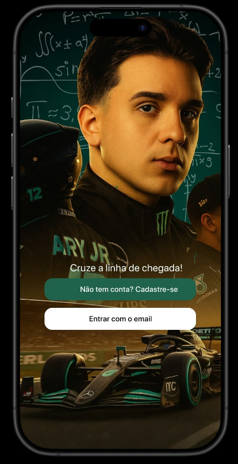
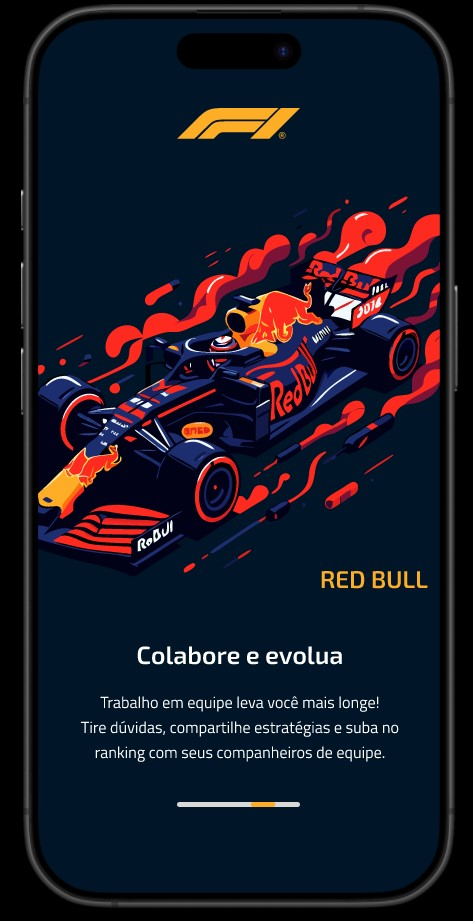
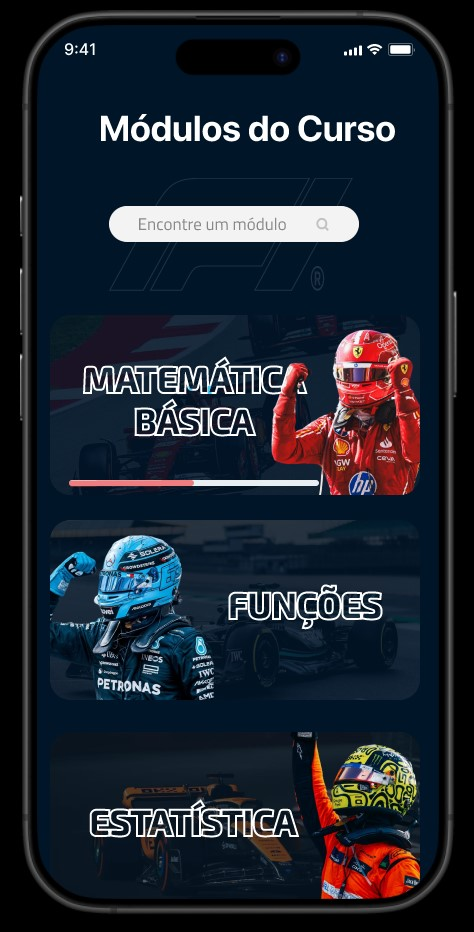
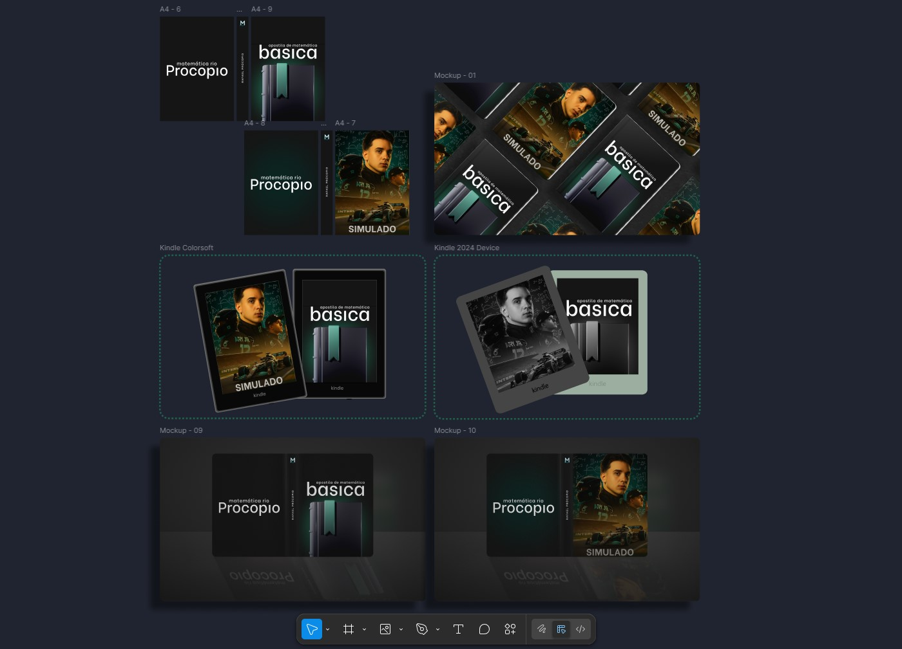

MathLeague - Mobile Matemática Rio.
Projeto acadêmico que transforma o aprendizado de matemática em uma experiência gamificada e interativa.
Descrição do Projeto
MathLeague é uma aplicação que simula uma liga de desafios matemáticos, onde os usuários podem resolver questões de diferentes níveis de dificuldade, acumular pontos, acompanhar sua evolução em um ranking competitivo e interagir com uma interface moderna e intuitiva. O objetivo é estimular o raciocínio lógico e o aprendizado contínuo de forma divertida.
Minha Participação
Fui responsável por toda a parte de design e prototipação no Figma. Isso incluiu a criação de todas as telas e componentes visuais, a definição da identidade visual e do fluxo de navegação, além da prototipação interativa que simula a experiência completa do usuário. Após isso fiz a codificação das telas do app utilizando React Native.
Links do Projeto
Equipe
- Front-end / Figma: Bianca Bomfim
- Back-end: Amanda Fonseca, Danilo Paulino
- Banco de Dados: Paulo Perez
Screenshots do Projeto



